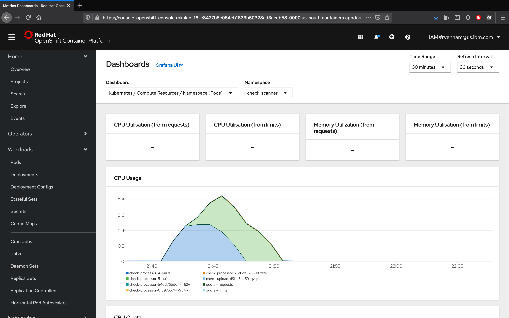

Logging and monitoring
In this exercise, we'll explore the out-of-the-box logging and monitoring capabilities that are offered in OpenShift.
OpenShift Logging
Since we only created one pod, seeing our logs will be straight forward.
Ensure that you're in the Developer view. Then, navigate to Topology.
Navigate to your Pod by selecting your check-scanner-processor app, then clicking the name of the Pod under Pods.
Click on View Logs next to your Pods to see streaming logs from your running application.
OpenShift Terminal
One of the great things about Kubernetes is the ability to quickly debug your application pods with SSH terminals. This is great for development, but generally is not recommended in production environments. OpenShift makes it even easier by allowing you to launch a terminal directly in the dashboard.
Navigate to your Pod by selecting your app, then clicking the name of the Pod under Pods.
Switch to the Terminal tab
Run the following Shell commands:
| Command | Description |
|---|---|
| ls | List the project files. |
| ps aux | List the running processes. |
OpenShift Monitoring
Grafana
Red Hat OpenShift on IBM Cloud comes with Grafana preinstalled.
- Get started by switching from the Developer perspective to the Administrator perspective:
- Navigate to Monitoring > Dashboards in the left-hand bar.
- Select Kubernetes / Compute Resources / Namespace (Pods) from the dropdown (initially set to etcd) and Namespace to check-scanner
- Notice the CPU and Memory usage for your application. In production environments, this is helpful for identifying the average amount of CPU or Memory your application uses, especially as it can fluctuate through the day.
 )
Prometheus
Navigating back to the OpenShift console, you can also launch:
- Prometheus - a monitoring system with an efficient time series database
- Alertmanager - an extension of Prometheus focused on managing alerts
OpenShift provides a web interface to Prometheus, which enables you to run Prometheus Query Language (PromQL) queries and examine the metrics visualized on a plot. This functionality provides an extensive overview of the cluster state and enables you to troubleshoot problems. Take a look around, and try the Insert Example Query.
- The Metrics page is accessible in the Administrator perspective by clicking Monitoring → Metrics.
- A query expression can be entered. Paste in the following to get a look at our frontend:
{:pre}sum(container_cpu_usage_seconds_total{container="check-scanner-upload"}) - Click on the Graph tab. Note that the times are GMT: